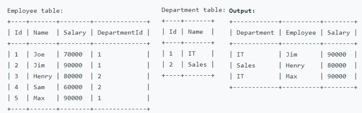

Problems
Problems#
If you want to have some hands on practice without the hassle of installing and setting up the required softwares in your local machine üî´DB Fiddle provides free SQL sandbox. In a lot of problems below prebuilt sandbox links are already provided to refer but it is always recommended that you setup your personal sandbox to play around.
Problem: [Leetcode] Second Highest Salary
Reference - Leetcode
For a similar problem with different approach check Nth highest salary problem
Write a SQL query to get the second highest salary from the Employee table.
Id |
Salary |
|---|---|
1 |
100 |
2 |
200 |
3 |
300 |
For example, given the above Employee table, the query should return 200 as the second highest salary. If there is no second highest salary, then the query should return null.
Solution:
Multiple solutions are possible only one approach is given below for reference
SELECT
(SELECT DISTINCT(Salary)
FROM Employee
ORDER BY Salary DESC
LIMIT 1 OFFSET 1)
AS SecondHighestSalary
Problem: [Leetcode] Rank Scores
Reference - Leetcode
Write a SQL query to rank scores. If there is a tie between two scores, both should have the same ranking. Note that after a tie, the next ranking number should be the next consecutive integer value. In other words, there should be no “holes” between ranks.
Id |
Score |
|---|---|
1 |
3.40 |
2 |
3.65 |
3 |
4.00 |
4 |
3.50 |
5 |
4.00 |
6 |
3.65 |
For example, given the above Scores table, your query should generate the following report (order by highest score):
score |
Rank |
|---|---|
4.00 |
1 |
4.00 |
1 |
3.95 |
2 |
3.65 |
3 |
3.65 |
3 |
3.40 |
4 |
Solution:
The tie resolving method which is being asked in the question is called Dense Rank, if we use Rank it will have “holes”
select
Score, dense_rank() over(order by score desc) as Rank
from Scores
Problem: [CHEWY] 2nd Highest score
Id |
subject |
marks |
|---|---|---|
1 |
Maths |
30 |
1 |
Phy |
50 |
1 |
Chem |
85 |
2 |
Maths |
90 |
2 |
Phy |
50 |
2 |
Chem |
85 |
Select the second highest mark for each student.
Solution:
with CTE as(
select *, rank() over(partition by Id order by marks desc) as Rank from tablename
)
select Id, subject, marks from CTE where Rank = 1
Problem: [Leetcode] Consecutive Numbers
Reference - Leetcode
Write an SQL query to find all numbers that appear at least three times consecutively.
Return the result table in any order.
Input:
Logs table:
Id |
Num |
|---|---|
1 |
1 |
2 |
1 |
3 |
1 |
4 |
2 |
5 |
1 |
6 |
2 |
7 |
2 |
Result table:
ConsecutiveNums |
|---|
1 |
1 is the only number that appears consecutively for at least three times.
Solution:
Multiple solutions are possible, one of them is given below
with a(Num,NextNum,SecondNextNum ) as(
SELECT Num
, LEAD(Num, 1) OVER (ORDER BY Id) AS NextNum
, LEAD(Num, 2) OVER (ORDER BY Id) AS SecondNextNum
FROM Logs
)
select distinct(Num) as ConsecutiveNums from a
where
Num = NextNum
and Num = SecondNextNum
Problem: [SALESFORCE] User Growth
Given you have user data for 2 accounts for 2 months. Calculate the growth rate of users in each account where growth rate is defined as unique users in month 2 divided by unique users in month 1.
date_details |
account_id |
user_id |
|---|---|---|
2021-01-01 |
U1 |
A1 |
2021-01-01 |
U1 |
A2 |
2021-01-01 |
U1 |
A3 |
2021-01-01 |
U1 |
A4 |
2021-02-01 |
U1 |
A1 |
2021-02-01 |
U1 |
A2 |
2021-02-01 |
U1 |
A3 |
2021-02-01 |
U1 |
A4 |
2021-02-01 |
U1 |
A5 |
2021-01-01 |
U2 |
A1 |
2021-01-01 |
U2 |
A2 |
2021-01-01 |
U2 |
A3 |
2021-02-01 |
U2 |
A1 |
2021-02-01 |
U2 |
A2 |
Solution:
with cte as (
select account_id, count(distinct(user_id)) as unique_user, MONTH(date_details) as user_month from tablename
group by account_id, MONTH(date_details)
)
select a.account_id,month_2,month_1,
cast((month_2/month_1)as float) as growth from
(select account_id, unique_user as month_1
from cte where user_month = 1)a
left join
(select account_id, unique_user as month_2
from cte where user_month = 2)b
on (a.account_id = b.account_id)
Problem: [SALESFORCE] Month over Month Revenue
You have 2 tables:
transactions: date, prod_id, quantity
products: prod_id, price
Calculate the month over month revenue, example month over month revenue for month2 is month2_Revenue- month1_Revenue
Solution:
with cte as(
select MONTH(a.date_details) as month, sum(b.price*a.qty) as Rev
from transactions a
inner join products b
on a.prod_id = b.prod_id
group by MONTH(a.date_details)
),
cte2 as(
select month, Rev, lag(Rev,1) over(order by month) as prev_month
from cte
)
select month, (Rev-Prev_month) as extra_rev from cte2
where
prev_month is not null
Problem: [SALESFORCE] Employee earning more than their manager
Reference - Leetcode
Write an SQL query to find the employees who earn more than their managers.
Id |
Name |
Salary |
ManagerId |
|---|---|---|---|
1 |
Joe |
70000 |
3 |
2 |
Henry |
80000 |
4 |
3 |
Sam |
60000 |
|
4 |
Max |
90000 |
Output will be : Joe
Solution:
with cte as(
Select a.Name as Employee, b.Name as Manager, a.Salary as Emp_Sal, b.Salary as Man_Salary
from Employee a
inner join Employee b
on a.ManagerId = b.id)
Select Employee from cte where Emp_Sal > Man_Salary
Problem: [Leetcode] Highest Salary in each Department
Reference - Leetcode
Write an SQL query to find employees who have the highest salary in each of the departments.

Solution:
with cte as(
select Name, Salary, DepartmentId,
RANK() over(Partition by DepartmentId order by salary desc) as Rank
from Employee
)
select b.Name as Department, a.Name as Employee, a.Salary
from cte a
inner join Department b
on a.DepartmentId = b.Id
where a.Rank = 1
Problem: [AMAZON] Cumulative Sum
Given a users table, write a query to get the cumulative number of new users added by day, with the total reset every month.
Solution:
Select Created_date
,SUM(Count(Id)) OVER(partition by month(Created_date) order by Created_date) as Total_users
from users
group by Created_date
Problem: Tree Structure Labeling
üî´Playground Input:
node |
parent |
|---|---|
1 |
2 |
2 |
5 |
3 |
5 |
4 |
3 |
5 |
NULL |
Write SQL such that you label each node as a “leaf”, “inner” or “Root” node, such that for the nodes above the output is:
Output:
node |
label |
|---|---|
1 |
Leaf |
2 |
Inner |
3 |
Inner |
4 |
Leaf |
5 |
Root |
Solution:
select node,
case
when parent is null then 'Root'
when node not in (select parent from tree where parent is not null) then 'Leaf'
else 'Inner'
end as label
from tree
Problem: [FACEBOOK] Binning data
üî´Playground Input:
id |
length |
|---|---|
1 |
4 |
2 |
3 |
3 |
7 |
4 |
8 |
5 |
9 |
6 |
110 |
7 |
113 |
Bin the videos into groups of 5 secs each
Output:
bucket |
count |
|---|---|
0-5 |
2 |
5-10 |
3 |
110-115 |
2 |
Another similar question was asked in Facebook but instead of video length the ask was to write a SQL query to create a histogram of number of comments per user in the month of January 2020. As the approach is similar hence not including it here.
Solution:
with cte as(
select id, length, ((CAST((FLOOR(length)/5)*5 as varchar)) +'-'+(CAST((FLOOR(length)/5)*5+5 as varchar))) as bucket
from video_view_details
)
select bucket, count(id) as 'count'
from cte
group by bucket
order by len(bucket) asc, bucket desc
Problem: [DROPBOX] Closest SAT Scores
Given a table of students and their SAT test scores, write a query to return the two students with the closest test scores with the score difference. Assume a random pick if there are multiple students with the same score difference.
Input:
id |
score |
|---|---|
1 |
40 |
2 |
35 |
3 |
70 |
4 |
80 |
Output:
id |
other_student |
diff |
|---|---|---|
1 |
2 |
5 |
Solution:
with cte as(
select id, score, LEAD(score, 1) over(order by score desc) as prior_score,
LEAD(id, 1) over(order by score desc) as other_student
from score
),
cte2 as (
select id,other_student, (score-prior_score) as diff
from cte
)
select top 1* from cte2
where diff is not null
order by diff asc
Problem: [AMAZON] Average Distance between Cities
You are given a table with varying distances from various cities. How do you find the average distance between each of the pairs of the cities?
scity |
dcity |
distance |
|---|---|---|
City A |
City B |
30 |
City A |
City B |
32 |
City B |
City A |
29 |
City A |
City C |
40 |
City C |
City A |
41 |
Output:
city1 |
city2 |
distance |
|---|---|---|
City A |
City C |
40.5 |
City A |
City B |
30.3333333333333 |
Another variant of this question is
“Write a query to create a new table, named flight routes, that displays unique pairs of two locations?”
Solution:
select
(case when scity < dcity then scity else dcity end) city1,
(case when scity < dcity then dcity else scity end) city2,
avg(cast(distance as float)) distance
from tablename
group by
(case when scity < dcity then scity else dcity end),
(case when scity < dcity then dcity else scity end)
order by avg(cast(distance as float)) desc
Problem: [AMAZON] Duplicate Rows
Given a users table, write a query to return only its duplicate rows
Solution:
Multiple solutions are possible only one approach is given below for reference
Let’s assume there are 2 columns: id, name
SELECT *, COUNT(*) FROM userstable
GROUP BY id, name
HAVING COUNT(*) > 1
Problem: [INTUIT] Product Average
transactions table
column |
type |
|---|---|
id |
integer |
user_id |
integer |
created_at |
datetime |
product_id |
integer |
quantity |
integer |
products table
column |
type |
|---|---|
id |
integer |
name |
string |
price |
float |
Given a table of transactions and products, write a query to return the product id, product price, and average transaction price of all products with price greater than the average transaction price.
Solution:
with cte as (
select
t.product_id,
avg(t.quantity * p.price) as avg_trans_price
from transactions t
inner join products p
on t.product_id = p.id
group by t.product_id
)
select
p.id as product_id,
p.price as product_price,
c.avg_trans_price as avg_price
from products p
inner join cte c
on p.id = c.product_id
where p.price > c.avg_trans_price